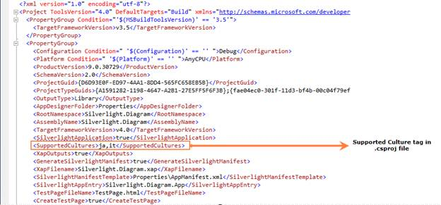
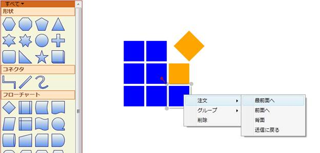
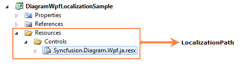
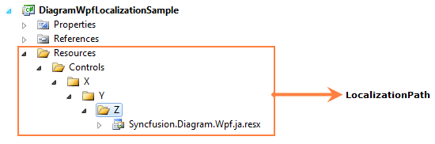

Localization is the process of providing controls in different cultures to help users to easily set their own culture.
Use Case Scenarios
Localization is the process of customizing the User Interface (UI) in a language and culture specific to a particular country or region to display regional data . Localization is the key feature that provides solutions to global customers with the help of localized resource files provided by controls.
Figure 160: Localization Sample in Japanese Language
Localizing the Application
Adding Resource Files
To localize the Syncfusion Diagram Silverlight control, you need to a create resource file for each culture. The following steps should be performed when localizing strings for your culture:
1. Add the resource (.resx) files in the Resources folder for different cultures. The .resx files for the different cultures or invariant cultures should be placed in the Resources folder of your project.
2. Name the resource files according to the formats specified, namely AssemblyName.CultureName.resx and AssemblyName.resx for the invariant cultures. Here, AssemblyName is the Syncfusion Silverlight control assembly name and CultureName is the culture code of the resource file that you want to show in the UI. If your conversion is only for the invariant culture, then the .resx file does not require a culture suffix.
Examples:
Syncfusion.Diagram.Silverlight.ja.resx - A Japanese resource file for the Syncfusion.Diagram.Silverlight assembly.
Syncfusion.Diagram.Silverlight.resx - An invariant culture resource file for the Syncfusion.Diagram.Silverlight assembly.
Adding Supported Cultures
It is essential to add supported cultures in the sample application project before you execute the application.
To add the supported cultures:
1. In the Solution Explorer, right-click the sample application project, and then select Unload Project. The project will be unavailable.
2. Right-click the sample application project again, and then select Edit SampleProjectName.csproj.
3. In the .csproj file, find the <SupportedCultures></SupportedCultures> tags. By default, the tags will be empty. Therefore, add the cultures that you want the sample application project to support. If there are many cultures to be added, then separate each culture with a comma. For example, <SupportedCultures>fr,ja</SupportedCultures>.
4. To save the sample application project, on the File menu, click Save.
5. To reload the sample application project, right-click SampleProjectName.csproj, and then select Reload SampleProjectName.csproj.

Figure 161: Supported Culture Tag in .csproj File
Assigning the Current UI Culture to the Application
By default, the current culture is set to “en-US”. You can check the current culture from “System.Threading.Thread.CurrentThread.CurrentUICulture”. CurrentUICulture can be changed, as shown in the following code snippets.
In the following example, CurrentUICulture is set before IntializeComponent in the StartUp page (MainPage.xaml.cs).
|
[C#] public MainPage() { System.Threading.Thread.CurrentThread.CurrentUICulture = new System.Globalization.CultureInfo("ja"); InitializeComponent(); } |
|
[VB] 'INSTANT VB WARNING: The following constructor is declared outside of its associated class: 'ORIGINAL LINE: public MainPage() Public Sub New() System.Threading.Thread.CurrentThread.CurrentUICulture = New System.Globalization.CultureInfo("ja") InitializeComponent() End Sub |
Else, CurrentUICulture is set in the Application_Startup event in the App.xaml.cs file, as shown in the following example.
|
[C#] private void Application_Startup(object sender, StartupEventArgs e) { System.Threading.Thread.CurrentThread.CurrentUICulture = new System.Globalization.CultureInfo("ja"); this.RootVisual = new MainPage(); } |
|
[VB] Private Sub Application_Startup(ByVal sender As Object, ByVal e As StartupEventArgs) System.Threading.Thread.CurrentThread.CurrentUICulture = New System.Globalization.CultureInfo("ja") Me.RootVisual = New MainPage() End Sub |

Figure 162: Localization Sample in Japanese Language
Specifying the Directory Location of the Resource File
By default, the resource file for a specific culture is obtained from the Resources directory. However, the location of the resource file can be changed by using DiagramControl’s LocalizationPath property, as shown in the following code snippet.
|
[C#] // The location of the localized resource file is stored in the \Resources\Controls directory. diagramControl.LocalizationPath = "Resources.Controls"; |
|
[VB] 'The location of the localized resource file is stored in the \Resources\Controls directory. diagramControl.LocalizationPath = "Resources.Controls" |

Figure 163: Customized LocalizationPath
Example:
|
[C#] // The location of the localized resource file is stored in the \Resources\X\Y\Z directory. diagramControl.LocalizationPath = "Resources.X.Y.Z"; |
|
[VB] 'The location of the localized resource file is stored in the \Resources\X\Y\Z directory. diagramControl.LocalizationPath = "Resources.X.Y.Z" |

Figure 164: Customized LocalizationPath
Note:
LocalizationPath for the resource file should be specified before DiagramControl’s Template is applied.
Properties
The property of the Localization feature is described in the following tabulation:
Table 16: Property Table
|
Property |
Description |
Type |
Data Type |
Reference links |
|
LocalizationPath |
Indicates the directory in which the resource files are located. |
CLR |
string |
Not applicable |